RSSM-v5 dreams vs real (5 frames)
v5_dream_vs_real_task0_frame00

v5_dream_vs_real_task0_frame01
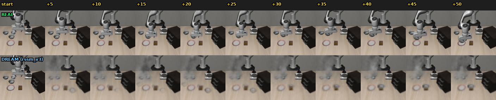
v5_dream_vs_real_task1_frame00
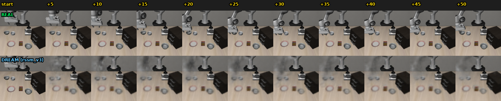
v5_dream_vs_real_task3_frame00
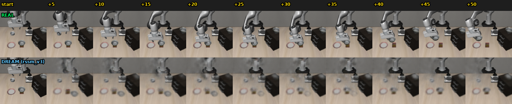
v5_dream_vs_real_task4_frame00
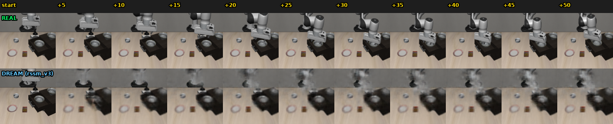
All RSSM-v5 dream/fan-out images. Top row in each: real frames. Bottom row: pixels decoded from the latent dynamics, conditioned on the policy's actions. Used both for sanity-checking the world model and (in the fan-out variant) to visualize how K=8 imagined trajectories diverge in latent space.




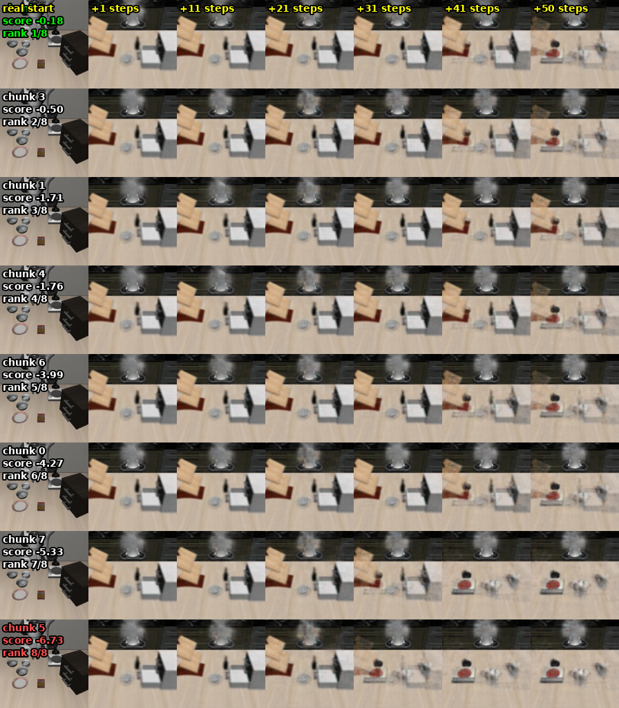
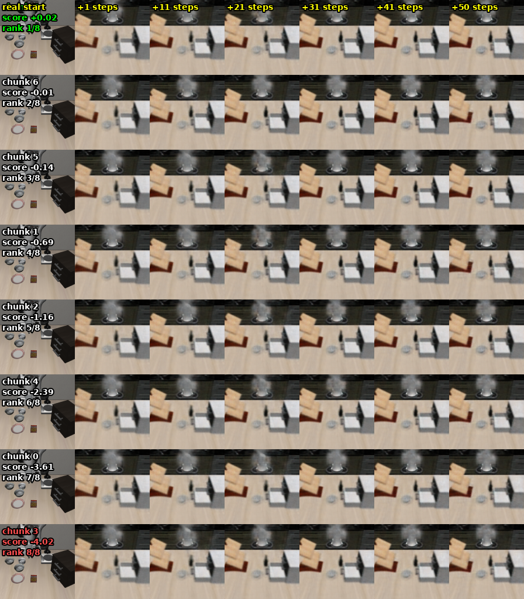
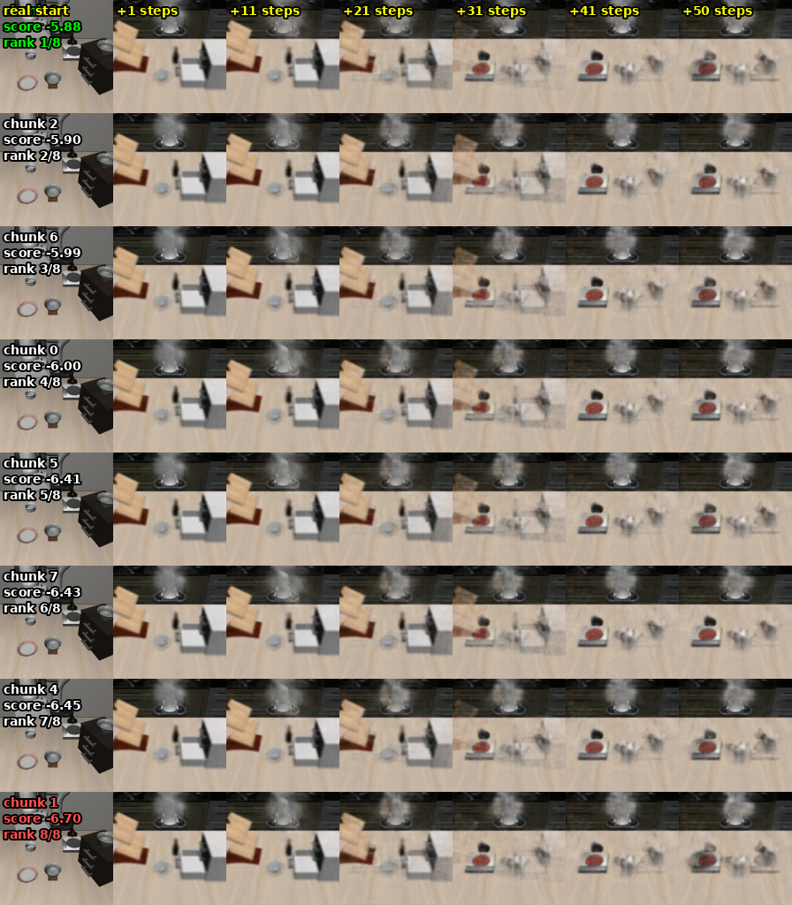
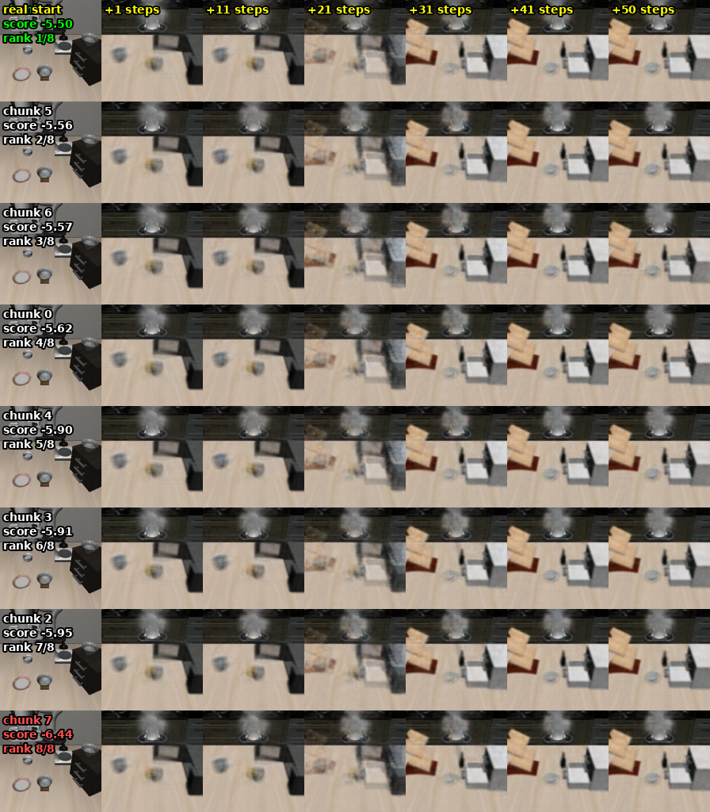
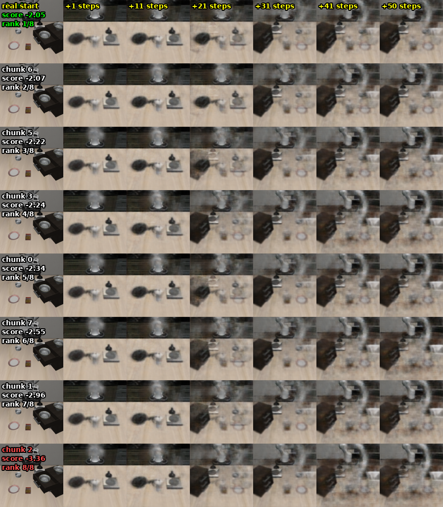
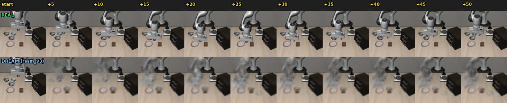
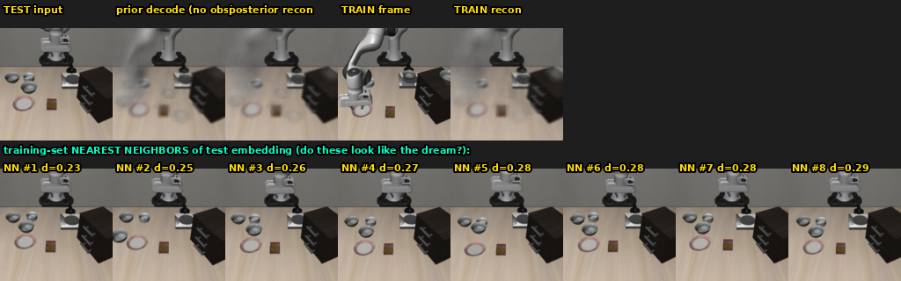